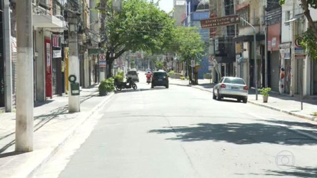

Categorias
Várias cidades de São Paulo aumentaram as restrições. É uma tentativa de reduzir a circulação das pessoas para conter o avanço da pandemia.
Um sábado, irreconhecível no centro de São Paulo. No Bom Retiro, bairro tradicional de comércio de roupas, quase tudo fechado, como determina a fase emergencial. Mas a Avenida Paulista tinha bastante movimento, nem parecia que era dia de ficar em casa.
Com o risco de perder a viagem, pouca gente foi para as estradas. Barreiras sanitárias foram montadas no interior do estado. Em Campinas, teve fiscalização nas principais avenidas. Em São Roque, as barreiras foram na conhecida rota do vinho. O comércio só funciona com entregas, inclusive os supermercados e as padarias.
Atibaia, outra cidade turística, também montou um bloqueio e aumentou as restrições para o comércio.
Em São Caetano do Sul, na região do ABC, a prefeitura montou quatro barreiras sanitárias, e só deixou circular quem mora ou trabalha nos serviços considerados essenciais. “Eu moro em São Paulo e trabalho aqui. Mas isso é importante, porque a cidade é pequena, tem bastante idoso, então é importante isso”, ressalta a empresária Luana Vieira Bittencourt.
Ruas vazias e quase tudo fechado. Embu Guaçu foi a única cidade da região metropolitana de São Paulo que decidiu pelo lockdown. Por decreto da prefeitura, os quase 70 mil moradores só podem sair de casa se houver necessidade de ir ao hospital, farmácias ou supermercados. A maior parte dos serviços essenciais tem que fechar às 20 horas. A cidade tem um hospital com 21 leitos de UTI e só quatro estão disponíveis. Quem estava na rua era porque precisava trabalhar mesmo. O gerente da padaria Daniel Pereira conta que nunca tinha visto a cidade tão calma: “Desse jeito, nunca”.
“Pelo menos 15 dias desse jeito acaba resolvendo. Porque quem está contaminado está em casa, então não vai sair e quem não está contaminado está em casa e não tem como pegar”, comenta o caminhoneiro Jeremias de Oliveira Lacerda.Porém, a gravidade da pandemia parece não sensibilizar todos. Surfistas protestaram para entrar no mar. E na capital, a polícia fechou uma casa noturna.
Para o médico sanitarista e um dos fundadores da Anvisa, a Agência Nacional de Vigilância Sanitária, Gonzalo Vecina, a pausa sanitária pode ajudar sim a diminuir a circulação, mas as autoridades deveriam promover mais o isolamento social. “A experiência demonstra que lockdown, que isolamento social, funciona. Só que tem que ser sério, não pode haver escape e a fiscalização tem que agir no sentido de evitar que existam festas populares, que as pessoas que estão sentindo que é um feriado. Tem que transformar isso em algum tipo de comemoração e daí importância da polícia e da Vigilância Sanitária. Ou nós vamos ver a resposta disso nos cemitérios”, disse.